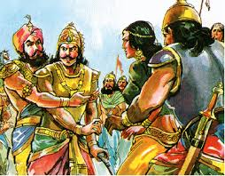

At the conclusion of his stay in Amravati Arjuna prepared to return to his brothers. Indra gave him the weapon of Bajra, and taught him how to use it. Arjuna came back to his family on Indra's chariot and all Pandava brothers were happy to see him back. Through a messenger Duryodhana learnt that the Pandavas were staying in the Dwitavana forest as ascetics. They decided to go there for a hunting game along with Shakuni and Karna. The idea was to start a quarrel with the Pandavas and then kill them. Indra heard about this and sent the chief of the Gandharvas, Chitrasen. in order to give a lesson to Duryodhana so that he stayed humble in the future and stopped bothering the Pandavas. The Gandharvas were good not only in music but also in war games.

Chitrasen came to Dwitavana along with his army and confronted Duryodhana. In the following skirmish, Duryodhana and his party were taken captive. Duryodhana was brought before Yudhishthira. Yudhishthira asked Chitrasen to free his cousin brother but Chitrasen insisted that Duryodhana must apologize for his heinous plan. Duryodhana had no choice. He apologized and the Kauravas returned to Hastinapur. Dhritarashtra and Bheeshma heard about the encounter with the Pandavas, and they too asked Duryodhana to make peace with the Pandavas and share the kingdom with them. Duryodhana refused. As for the Pandavas, they continued their exile in Dwitavana. At one point, Yama, the god of death, appeared to test Yudhishthira for his steadfast faith in truth. Yudhishthira surpassed his evaluation. Yama was pleased and asked Yudhishthira to request a boon. Yudhishthira requested that Yama protect them through the thirteenth year of exile, because they need to stay undetected according to the condition of the exile. Yamaraj blessed Yudhishthira and asked him to go to king Virata and stay there during the thirteenth year. The Pandavas started to make preparations to move to the kingdom of Virata.